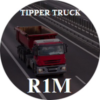
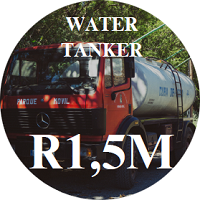
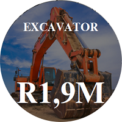

Also known as the workhorse of any construction site. The minimum required to join a Tipper Truck Investment Chamber is R100,000 (one hundred thousand rands). Tipper trucks command anything from R300-R350excl. VAT per hour..

Needed on almost every construction site, the 18,000L water tanker truck is a perfect opportunity to invest in a long term construction cash cow. Unlike excavators and tipper trucks, water tankers are rarely required to drive on unfavorable terrain, meaning less maintenance costs and more benefits. These vehicles command between R350-R400excl. VAT per hour and the minimum to join one of these chambers is R150,000.

The famous saying goes, “Its not yet a construction site until you have an excavator.” Excavators are needed in almost anything that has to do with infrastructure. They are the backbone of the industry and demand is incredibly high. Although this type of plant may sometimes not get long term contracts, it commands high leasing values and is needed during all seasons. Joining an Investment Chamber for this plant requires a minimum of R190,000.